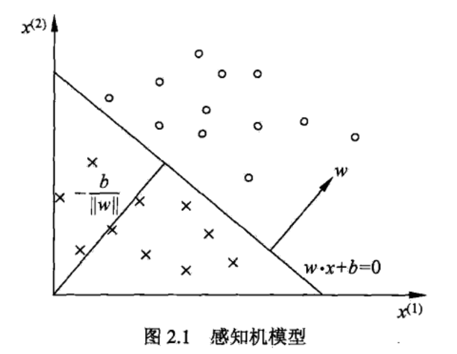

感知机(preceptron)
Clément édite à 13.10.2016, vient de "统计学习方法,李航"
感知机是二分类的线性分类模型，输入为实例的特征向量，输出为实例的类别，取+1 和 —1 二值。
感知机学习旨在求出将训练数据进行线性划分的分离超平面，属于判别模型。
感知机是最简单的机器学习网络模型，我们常用的BP网络严格来说是使用了“BP算法”进行训练的“多层感知机模型”。多层感知器（MLP，Multilayer Perceptron）是一种前馈人工神经网络模型，其将输入的多个数据集映射到单一的输出的数据集上，可以解决任何线性不可分问题。
描述
导入基于误分类的损失函数，利用梯度下降法对损失函数进行极小化，求得感知机模型。是神经网络与支持向量机的基础。
感知机模型
假设输入空间(特征空间)是 X⊆Rn,输出空间是Y=+1,−1.输入x∈X 表示实例的特征向量，对应于输入空间(特征空间)的点;输出y∈Y表示实例的类别。由输入空间到输出空间的如下函数
f(x)=sign(w⋅x+b)
称为感知机。其中，w和b为感知机模型参数，w∈Rn 叫做权值(weight)或权值向量(weight vector), b∈R叫做偏置(bias)，w⋅x表示w和x的内积。sign是符号函数，即
sign(x)=⎩⎨⎧+1,x≥0−1,x<0
感知机是一种线性分类模型，属于判别类别。线性方程：
w⋅x+b=0
对应于特征空间Rn中的一个超平面S， 其中w是超平面的法向量，b是超平面的截距。超平面S称为分离超平面(separating hyperplane).

训练数据集(实例的特征向量及类别)：T={(x1,y1),(x2,y2),⋯,(xN,yN)}
其中xi∈X=Rn,yi∈Y={+1,−1},i=1,2,⋯,N
感知机学习策略
数据集的线性可分性
首先，要求数据集必须线性可分，即存在一个超平面S能够将数据集的正实例点和负实例点完全正确地划分到超平面的两侧。
损失函数
损失函数的选择是误分类点到超平面S的总距离，输入空间Rn中任意一点 x0到超平面S的距离：
∣∣w∣∣1∣w⋅x0+b∣
这里，||w||是w的L~2~范数。
误分类点x~i~到超平面S的距离是：
−∣∣w∣∣1yi(w⋅x0+b)
假设超平面S的误分类点集合为M，那么所有误分类点到超平面S的总距离为
−∣∣w∣∣1xi∈M∑yi(w⋅x0+b)
可令∣∣w∣∣1=1,就得到感知机学习的损失函数。
给定训练集数据集
T={(x1,y1),(x2,y2),⋯,(xN,yN)}
其中xi∈X=Rn,yi∈Y={+1,−1},i=1,2,⋯,N. 感知机sign(wx+b）学习的损失函数定义为：
L(w,b)=−xi∈M∑yi(w⋅x0+b)
M为误分类点的集合，这个损失函数就是感知机学习的经验风险函数。因此，给定训练数据集T，损失函数L(w,b)是w,b的连续可导函数。
感知机学习算法
感知机学习问题转化为求解损失函数式最优化的问题，最优化的方法是随机梯度下降法。
感知机学习算法的原始形式
给定训练集数据集
T={(x1,y1),(x2,y2),⋯,(xN,yN)}
其中xi∈X=Rn,yi∈Y={+1,−1},i=1,2,⋯,N,求参数w,b,使其为以下损失函数极小化问题的解
w,bminL(w,b)=−xi∈M∑yi(w⋅x0+b)
感知机学习算法是误分类驱动的，具体采用随机梯度下降法(stochastic gradient descent).首先任意选取一个超平面w0,b0, 然后用梯度下降算法不断地极小化目标函数。过程中是随机选取一个误分类点使其梯度下降。
假设误分类点集合M是固定的，那么损失函数L(w,b)的梯度由
∇wL(w,b)=−xi∈M∑yixi
∇bL(w,b)=−xi∈M∑yi
随机选取一个误分类点(xi,yi),对w,b进行更新：
w←w+ηyixi
b←b+ηyi
η(0<η≤1)是步长，在统计学习中又称为学习率(learning rate).
算法
输入：训练集数据集T={(x1,y1),(x2,y2),⋯,(xN,yN)}，其中 xi∈X=Rn,yi∈Y={+1,−1},i=1,2,⋯,N.
输出：w,b;感知机模型f(x)=sign(wx+b).
- 选取初值w0,b0
2.在训练集中选取数据(xi,yi)
3.如果yi(w⋅xi+b)≤0
w←w+ηyixi
b←b+ηyi
- 转至2，直至训练集中没有误分类点。
算法的收敛性
为了便于叙述与推导，将偏置b并入权重向量w，记作w^=(wT,b)T,将输入向量加以扩充，加进常数1，记作x^=(xT,1)T,这样,x^∈Rn+1,w^∈Rn+1。显然，w^⋅x^=w⋅x+b.
定理(Novikoff) 设训练集数据集T={(x1,y1),(x2,y2),⋯,(xN,yN)}，其中xi∈X=Rn,yi∈Y={+1,−1},i=1,2,⋯,N,则
(1)存在满足条件∣∣w^opt∣∣=1的超平面w^opt⋅x^=wopt⋅x+bopt=0将训练数据集完全正确分开;且存在γ>0,对所有i=1,2,⋯,N
yi(w^opt⋅x^)=yi(wopt⋅x+bopt)≥γ
(2)令R=max1≤i≤N∣∣xi^∣∣,则感知机算法在训练数据集上的误分类次数k满足不等式
l≤(γR)2
感知机学习算法的对偶形式
对偶形式的基本想法是，将w和b表示为实例xi和标记yi的线性组合的形式，通过求解其系数而求得w和b。不是一般性，假设初始值w0,b0均为0.对误分类点(xi,yi)通过
w←w+ηyixi
b←b+ηyi
逐步修改w,b,设修改n次，则w，b关于(xi,yi)的增量分别是αiyixi和αiyi，这里αi=niη,最后学习到的w，b可以分别表示为
w=i=1∑Nαiyixi
b=i=1∑Nαiyi
这里，αi≥0,i=1,2,⋯,N, 当η=1时，表示第i个实例点由于误分而进行更新的次数。实例点更新次数越多，意味着它距离分离超平面越近，也就越难正确分类。
对偶形式算法
输入：训练集数据集T={(x1,y1),(x2,y2),⋯,(xN,yN)}，其中xi∈X=Rn,yi∈Y={+1,−1},i=1,2,⋯,N.学习率η(0<η≤1);
输出：α,b;感知机模型f(x)=sign(∑j=1Nαjyjxj+b).
其中 α=(α1,α2,⋯,αN)T.
- α←0,b←0
2.在训练集中选取数据(xi,yi)
3.如果yi(∑j=1Nαjyjxj⋅xi+b)≤0
αi←αi+η
b←b+ηyi
- 转至2，直至训练集中没有误分类点。
对偶形式中训练实例仅以内积的形式出现。为了方便，可以预先将训练集中实例间的内积计算出来并以矩阵的形式存储，这个矩阵就是所谓的Gram矩阵(Gram matrix)
G=[xi⋅xj]N×N